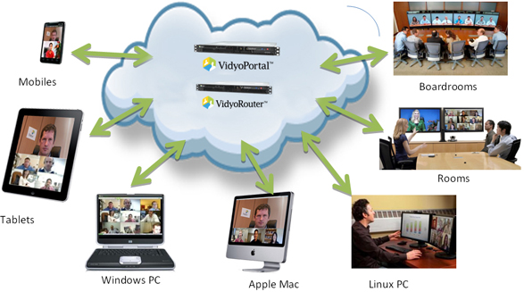

We have Strategic Alliance with Vidyo, Inc. Vidyo provides both software-based technology and product-based visual communication solutions. Vidyo is a software based solution which delivers true High Definition (HD) Video and Audio for Smart & Virtual Classroom solutions.
VidyoConferencing is the first video collaboration solution designed to work like the Internet itself. OUT is the old MCU-centric model and IN is the first software based solution designed specifically for distributed environment.
High Cost, Dedicated Networks, Expensive Systems and Dedicated Video Conferencing rooms could result in choppy frames, long delays, broken pictures (latency) and the like. We have obtained the H.264 / SVC (Scalable Video Coding) Standard for video compression. VidyoConferencing provides Telepresence quality over the internet and works on hardware and devices you already own. VidyoConferencing is distributed over Cloud and is more scalable and flexible.
Video Conferencing is becoming more integral to Educational Institutions, Hospitals and Enterprises.
Products
Description
VidyoPortal
Component which is an intuitive for accessing the functionality of Vidyo conferencing. hellps the administrators to access, manage, and
control the VC system. Allows authorized users to initiate a video call.
VidyoDesktop (License)
Software license which will enable a desktop into a VC system. Provides features such as application sharing, voice activated image
enlargement for speaker and a variety of audio and video controls.
VidyoRouter
Routes video and audio streams between end points. It intelligently identifies and adjusts to bandwidth and network constraints. It
eliminates the need for the Multipoint Control Unit (MCU) required in traditional video conferencing systems.
HD 100 with Camera,
Mike and Speaker
Room system with high definition (HD) camera with basic tilt and zoom facility. High quality audio (mike & speaker) with echo
cancellation and noise suppression. Required for sessions in classrooms, galleries and auditoriums.
VidyoReplay
Enables recording, streaming and webcasting (asynchronous playback) of any particular VC session.
Web Camera
High Definition USB camera for personal video conferencing using a laptop or Desktop PC.
Integrated mike & speaker
Speaker and mike with more clarity and echo cancellation used for personal conferencing.
Special Features
- Scalable Multipoint High Definition (HD) Video Conferencing
- Standards - based coding technology (H.264 / AVC / HVC)
- Latency free video output with good resolution and rate matching
- Performance independent of available bandwidth with different participants
- Investment protection of existing systems
- Safe and secure connectivity through any Firewall
- Uninterrupted conferencing while adding new participants
- Easy to use Web based Interface
Vidyo --- An edge over others
- H.264 / SVC (Scalable Video Coding) Standard
- New Architecture – Telepresence Quality Over the
Internet
- Works on Hardware and Devices you already own
- Conferencing distributed over Cloud
- Vidyo rooms don’t require dedicated conferencing
rooms
- Scalable and Flexible
- Live streaming, Recording and Webcasting
- Independent control over Video Layout